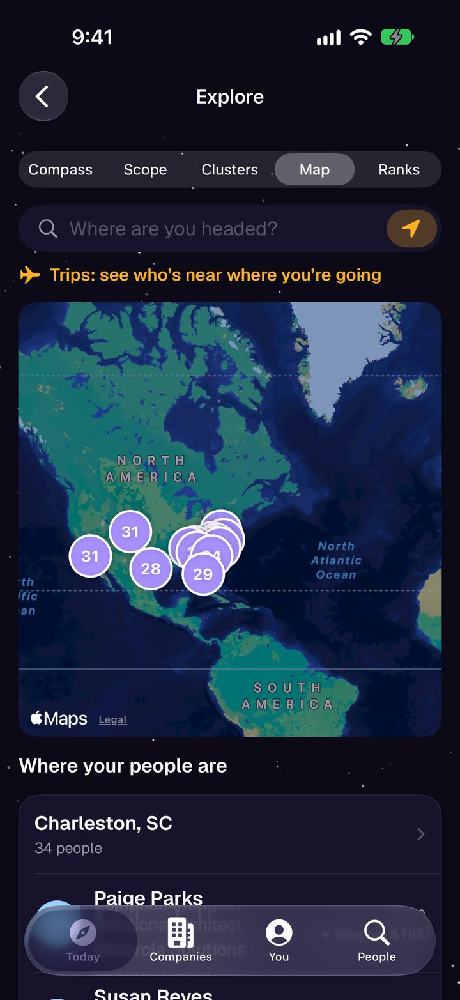
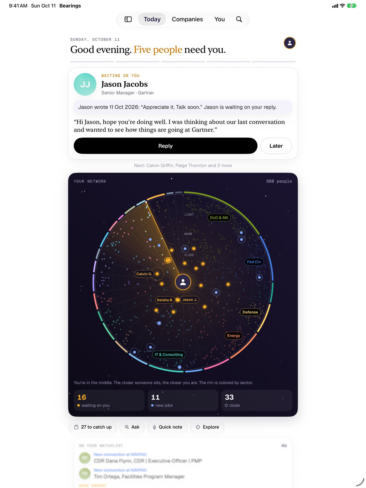
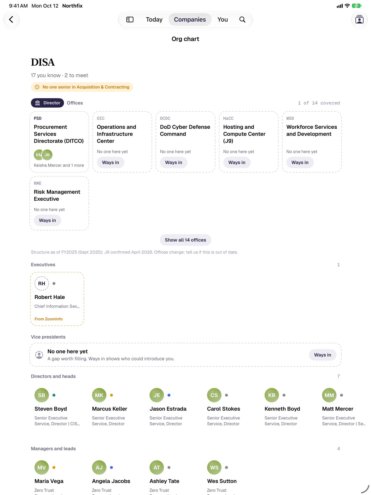

Know where you stand with everyone you know.
Bearings turns your LinkedIn connections into a private map of your network: who’s waiting on you, who just changed jobs, and your warmest way into any agency or company.
For iPhone, iPad, Mac, Apple Watch and Android. No account. No Bearings server.
Five people a week, one at a time.
Every Monday, Bearings picks the few people worth your time: who wrote last and is waiting on you, who just started a new role, who you used to talk to and has gone quiet.
Each one comes with the reason, what you last talked about and a note already drafted. One tap to write it, or push it to later. Five, and you’re done.
This card runs the real Bearings engine on a sample network of made-up people.
It remembers what you talked about.
Open anyone and Bearings tells you where you left off: the last message, who wrote last, the notes from your last meeting, when you last emailed.
- Before a meeting, your Lock Screen and Apple Watch show the face, the time and the last thing you discussed.
- Meeting notes from Plaud, Apple Notes or a reMarkable page land on the right people, and action items become follow-ups.
- Outlook or Gmail: Bearings reads only who, when and the subject line, so it knows who emailed and is waiting on you.
- Keep-in-touch circles: monthly, quarterly or yearly, with a nudge when someone is overdue.
Ask your network a question.
Plain words, real answers. Try one. It runs right here on the sample network, the same way it runs on your phone: nothing is sent anywhere.
Or just say what happened.
“Coffee with Jason. He wants the pricing deck by Friday.” Quick note finds Jason, logs the conversation and sets the follow-up. Say it to Siri or press the Action button.
Your whole network, at a glance.
The compass puts every person you know on one screen: sectors around the rim, closeness from the center out. Drag the lens across it and names rise to meet your finger.
- Search like you talk: “navy O-5 and up in cyber” or “contracting officers in Norfolk”.
- An optional federal and military view with branch, rank, grade, agency and segment.
- A map of where your people are, worked out on your phone.
- Your year in review, ready to share.
See every agency where you don’t know anyone yet.
Bearings matches each person’s employer and title to 160 departments, agencies and commands. Covered means someone senior and someone warm. Thin means one or the other. Everything grey is where you need to connect.
Then go get the meeting.
Every gap has two buttons: watch the agency, so leadership changes and news reach you, and find a way in through the people you already know.
Agencies change their names. An old name still matches, so your 2019 contact at the old office still counts.
Who sits where. Who decides. Who can get you in.
For anyone who sells to a big organization or the government: the org chart you’ve been keeping in your head, finally on paper.
Org charts
Everyone you and your team know at a company or agency, by level, with the empty seats called out. Fill them from ZoomInfo or your own file.
Pursuits
Map who decides each bid: sponsor, program manager, contracting officer, security lead. Bearings suggests who fits each seat and your warmest path to them.
Ways in
Your best paths into any company, ranked by how warm they are, with the intro ask drafted. Track the intro until it happens.
Team packs pool networks with teammates to find warm paths, without sharing notes or messages.
Moves shows who is likely to rotate, retire or leave service, so you reconnect in time.
Watchlist alerts bring leadership changes and news for the accounts you follow.
Your whole team’s network. Still private.
Start a team and everyone pools who they know, their pursuits and their watchlists. Ask who on the team can get you into DISA, and see the federal map for the team, not just for you.
Each teammate’s share is encrypted on their phone with a key that lives only in your invite link. The team server stores what it can’t read. Nobody sees anyone’s notes, messages or email, and leaving deletes your share.
- Start a teamName it and you’re the owner. 30 days free for up to 5 people.
- Send the invite linkThe team key rides along after the #, so only people with the link can read anything.
- Everyone syncsShares update in the background. Everyone on the team gets Bearings Pro.
Above: the real Bearings engine with three made-up teammates on the sample network.
Work the room. Then the follow-up.
Heading to a conference? Event mode shows who you know who’s going. Scan badges and business cards, QR codes too, and Bearings builds the follow-up list while you walk the floor.
- Trips from your calendar, with who you know nearby on your Lock Screen.
- Arrival alerts: land in a new city and see who’s there.
- A brief 30 minutes before meetings with people you know, written on your device.
- Pick the calendars you want, iCloud, Google or Outlook, and leave the rest out.

Take it for a spin.
This is the real app running in your browser on a sample network of 680 made-up people. Tap around: Today, People, Companies, the federal map, the compass. Nothing you do here leaves this page.
The sample is the Android version of the app. The iPhone app looks the way it does in the videos above.
Wherever you are.
iPhone, iPad and Mac stay in step through your own iCloud. Apple Watch shows who you’re about to meet. Widgets, Siri and the Action button get you there in one move. And there’s an Android app too.


- iPhoneThe whole app, plus Lock Screen and widgets
- iPadRoom to see the org chart and the map side by side
- MacThe same app at your desk, synced
- Apple WatchWho’s next, what you last said, a quick note
- AndroidToday, people, companies, the federal map
No account. No Bearings server.
Your network is some of the most sensitive data you have. So Bearings never has it. Everything lives on your devices and in your own iCloud. There’s nothing to sign up for and nothing for anyone to breach.
- Contacts, calendar, email headers and location are read on your device and never uploaded.
- Email: only who, when and the subject. Never the message.
- Briefs and drafts are written on your device.
- No ads. No tracking. No analytics.
Free to start. Pro for you. Team for the whole shop.
Bearings
Free
- The map, the compass and Today’s five
- Plain-English search and Ask Bearings
- Memory, notes, follow-ups and reminders
- Catch Up on new connections and job changes
- The federal map, org charts and pursuits
- Across your socials
- Widgets, Siri and Apple Watch
Bearings Pro
$99.99 a year, $19.99 a month, or $249.99 once
- Event mode with badge and card scanning
- Ways in, with the intro ask drafted
- Team packs
- Arrival alerts
- ZoomInfo and Seamless.AI enrichment
- Account map PDFs and Salesforce
Bearings Team
Per person, billed yearly. 30 days free for up to 5 people.
- Everything in Pro, for everyone on the team
- Ways in through every teammate’s network
- The team federal map
- Team pursuits and the team watchlist
- Invite links, roles and admin controls
- End-to-end encrypted: the server can’t read it
Get your bearings in ten minutes.
-
Ask LinkedIn for your data
Settings, Data privacy, Get a copy of your data. Tick Connections, Messages and Invitations.
-
Open the zip in Bearings
LinkedIn emails a link, usually within minutes. Open the file with Bearings. It stays on your phone.
-
See where you stand
Your compass, your five for the week and your federal map, ready the moment it loads.
Everyone you know, across every app.
Your LinkedIn people are only part of the picture. Bring in your Facebook, Instagram, Snapchat and TikTok downloads and Bearings matches them up: the colleague who’s also a Facebook friend, the client who follows you on Instagram.
Each app gives you a file of your own data. Bearings walks you through asking for it, reads it on your phone and keeps nothing else. No social logins, no scraping.